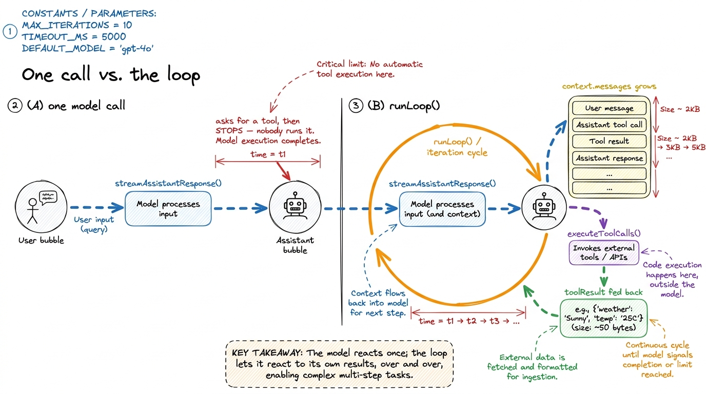
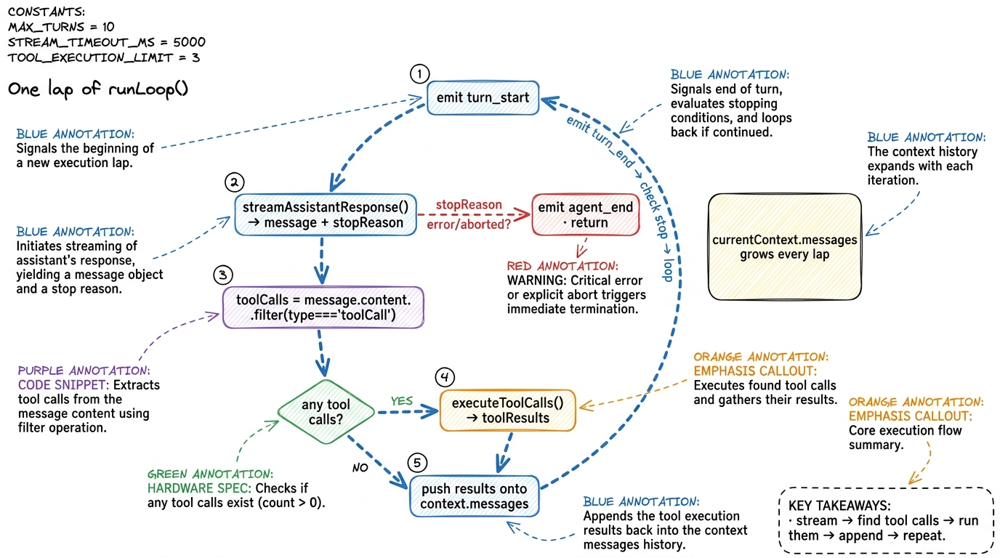
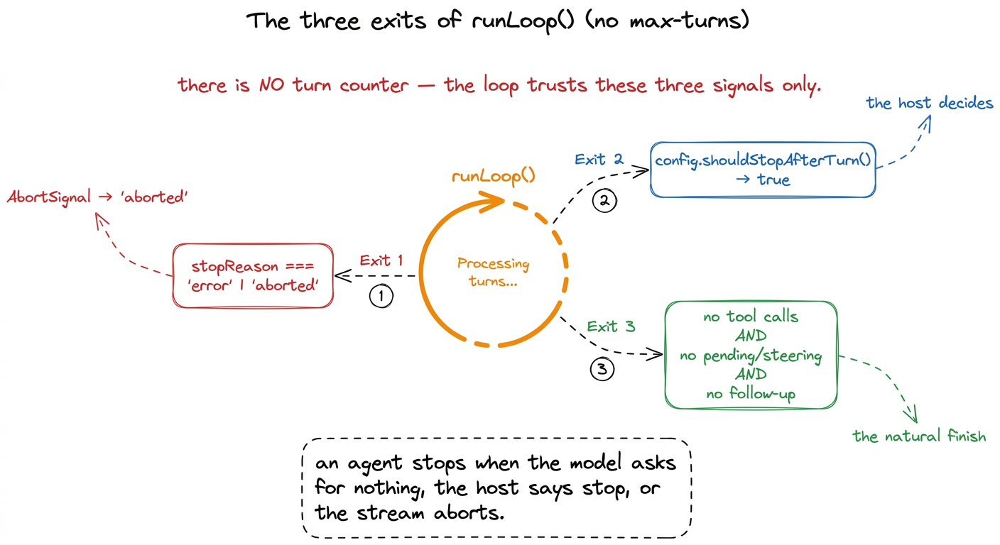
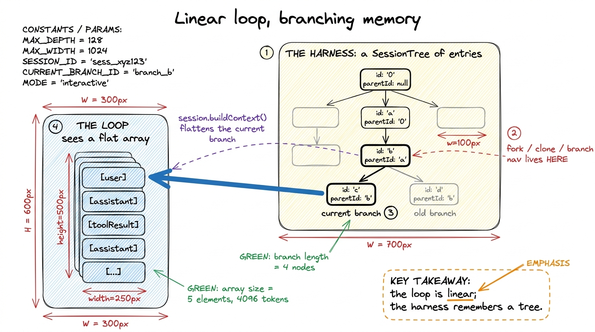

The loop: from a chat call to an agent BUILD
A model call answers once. You hand it messages, it hands you back one message, and then it forgets you exist. That is a chat. An agent is different in exactly one way: it keeps going — reads a file, sees what's inside, edits something, runs the tests, notices they failed, tries again — until the job is actually done. Nothing about the model changed between those two sentences. What changed is that somebody wrapped the single call in a loop and taught the loop when to stop.
That loop is the beating heart of Pi, and it is smaller than you'd guess. In this chapter we open packages/agent/src/agent-loop.ts and read the real runLoop() — the function every Pi session, every pi command, every subagent ultimately runs inside. By the end you'll be able to trace one lap by hand and name the exact three conditions that end it.1 This is a build chapter in a from-scratch book, so we motivate each piece by what the last one left missing. But the subject here is not a teaching toy — it's Pi's own shipping code, read line by line.
What the last layer left missing
Elsewhere we saw Pi's model client: give streamAssistantResponse() a context and it streams back one assistant message. Useful, and completely inert. Ask it to "fix the failing test" and it will say "let me look at the test file" and then stop — because a single call has no next step. It can request a tool, but nobody ran it; it never sees the result; it never gets a second chance to reason.
So the missing layer is control flow. Something has to: take the assistant's message, notice it asked for tools, actually execute them, thread the results back in, and call the model again so it can react. Repeat until there's nothing left to do. That "repeat until" is the whole job of runLoop().

figure rendering · A single call asks for a tool and halts. The loop runs the tool, feedsThe shape of one turn
Here is the inner engine of runLoop(), lightly trimmed. Read it slowly; almost everything Pi does at runtime passes through these lines.
// packages/agent/src/agent-loop.ts
while (hasMoreToolCalls || pendingMessages.length > 0) {
if (!firstTurn) await emit({ type: "turn_start" });
else firstTurn = false;
// 1. stream the assistant's message for this turn
const message = await streamAssistantResponse(currentContext, config, signal, emit, streamFn);
newMessages.push(message);
// 2. did the stream end badly? then we're done
if (message.stopReason === "error" || message.stopReason === "aborted") {
await emit({ type: "turn_end", message, toolResults: [] });
await emit({ type: "agent_end", messages: newMessages });
return;
}
// 3. pull the tool calls out of the assistant message
const toolCalls = message.content.filter((c) => c.type === "toolCall");
const toolResults: ToolResultMessage[] = [];
hasMoreToolCalls = false;
if (toolCalls.length > 0) {
const executedToolBatch = await executeToolCalls(currentContext, message, config, signal, emit);
toolResults.push(...executedToolBatch.messages);
hasMoreToolCalls = !executedToolBatch.terminate;
// 4. append every result back onto the running context
for (const result of toolResults) {
currentContext.messages.push(result);
newMessages.push(result);
}
}
await emit({ type: "turn_end", message, toolResults });
// 5. check stop conditions, poll steering… then loop
}Trace one lap. Pi emits turn_start, then streamAssistantResponse() produces the turn's assistant message, each carrying a stopReason. If that reason is error or aborted, the loop ends right there. Otherwise Pi filters the message content for toolCall blocks — this one line, message.content.filter(c => c.type === "toolCall"), is how Pi discovers what the model wants to do. If there are any, executeToolCalls() runs them and returns a batch of toolResult messages, which get pushed onto currentContext.messages. Emit turn_end, check whether to stop, and if not, loop — and next time around the model sees its own request and the results it produced.

figure rendering · One lap: stream the assistant message, extract its tool calls, executeNotice what is not here: there is no turn counter, no maxTurns, no ceiling. Pi does not stop after N iterations. It stops when — and only when — one of three real conditions is met.
The three ways a loop ends
An agent with no stop condition either spins forever or halts too early. Pi has exactly three exits, and it's worth memorizing them because they are the entire contract for "the agent is done."2 There's a fourth, quieter guardrail inside executeToolCalls(): if every tool in a batch returns a result flagged terminate, the batch sets terminate: true, hasMoreToolCalls becomes false, and the loop falls through to its stop-check. A tool can, in effect, ask the loop to wind down.
One — the stream itself ended badly. If message.stopReason === "error" or "aborted", the loop returns immediately. This is the path an interrupt takes: an AbortSignal is threaded through the entire chain — into streamAssistantResponse, into executeToolCalls, down to the tools — and when it fires, the stream yields stopReason: "aborted" and the loop exits cleanly. There is no kill; there is a signal everyone downstream honors.
Two — the host asked to stop. After each turn Pi awaits config.shouldStopAfterTurn?.({ message, toolResults, context, newMessages }). If that returns true, the loop emits agent_end and returns. This is the hook a surface (the TUI, a script, a subagent runner) uses to say "one turn was enough" without touching the loop's internals.
Three — there is genuinely nothing left to do. This is the ordinary, happy ending. The inner while (hasMoreToolCalls || pendingMessages.length > 0) falls through when the last assistant message asked for no tools and there are no queued steering messages. When it falls through, the outer loop polls config.getFollowUpMessages?.() one last time; if that's empty too, runLoop breaks and emits agent_end. No tool calls, no pending steering, no follow-up — done.

figure rendering · Pi's loop has no hard turn limit. It ends on exactly three signals: aThat absence of a max-turns cap is a deliberate design choice. Pi trusts the model's own signal (no more tool calls) plus an explicit host veto, rather than an arbitrary number that would either cut real work short or fail to catch a genuine runaway. Control is inverted: the loop keeps going as long as work keeps arriving, and the agent — not a counter — decides it's finished.
How a tool result finds its way home
For the loop to work, a result the model gets on lap three must be recognizably the answer to the request it made on lap two. Pi does this by ID, not by position. A Pi tool result is a message:
{ role: "toolResult", toolCallId, toolName, content, details, isError, timestamp }The toolCallId matches the id of the toolCall block in the assistant message that requested it. That's the thread. Because everything is keyed on IDs, Pi can run a whole batch of tools in parallel — executeToolCalls() defaults to Promise.all over the batch — and still stitch each result back to the exact call it answers, in any order they finish. A slow bash and a fast read return whenever they return; the IDs keep them straight.
The message roles themselves are a small, fixed vocabulary. From the model's side there are three — user, assistant, toolResult — and then Pi layers on its own harness-native kinds: bashExecution, compactionSummary, branchSummary, and a catch-all custom. Those extra roles are how Pi records things the raw chat protocol has no word for, like "here's the summary that replaced 200 turns of history" (compactionSummary).
The loop is linear; the harness remembers a tree
Here is the subtlety that makes Pi more than a chatbot, and it's worth slowing down for. Inside runLoop(), the conversation is a flat array: currentContext.messages, an AgentMessage[]. The loop pushes onto it and reads from it as a simple list. As far as the loop knows, history is a straight line.
But that flat array is not where Pi actually stores your session. The harness (packages/agent/src/harness/agent-harness.ts) keeps a tree of SessionTreeEntry nodes — each entry has an id and a parentId, so entries form branches, not a line:
// packages/agent/src/harness/types.ts
export interface SessionTreeEntryBase {
type: string;
id: string;
parentId: string | null; // ← this is what makes it a tree
timestamp: string;
}A message is just one node type (MessageEntry); others record a model switch, a compaction, a branch summary. When it's time to run the loop, session.buildContext() walks the current branch from leaf to root and flattens it into the plain AgentMessage[] the loop consumes. The tree is the truth; the array is a view of one path through it.

figure rendering · The loop only ever sees a flat message list. The harness stores a branWhy bother? Because a tree is what lets you fork a session, clone it, or rewind to an earlier point and try a different path — every branch is just a different route from root to leaf, and each one flattens into its own valid conversation. If Pi stored only the flat array, there'd be nothing to branch. The line the loop runs on is a projection; the tree is what makes exploration possible.
Phases: the loop doesn't run alone
One last frame. The harness runs the whole thing through a small phase machine — idle → turn → idle, with compaction and branch_summary as the two other states it can enter. A guard enforces it: prompt the harness while it isn't idle and it throws AgentHarnessError("busy"). So a session is idle, you send a prompt, it flips to turn and spins runLoop() until one of the three exits fires, then it settles back to idle — unless a long history triggers a compaction pass in between. The loop is the engine; the phases are the gearbox around it.
What you built, and what it still needs
We now have the real heart of Pi: runLoop(), an outer while(true) around an inner turn loop, ending on a bad stream, a host veto, or an honest run-out of work — no turn counter in sight. We know a toolResult threads back to its toolCall by id, that batches run in parallel, and that the flat array the loop sees is a flattened branch of a much richer session tree.
What the loop assumes but doesn't provide is the machinery hanging off it. It calls executeToolCalls() — but what is a Pi tool, exactly, and how is it defined? It filters for toolCall blocks — but which tools even exist? That's the next layer: the toolbox, where we open the tools Pi ships with and the exact shape every tool must take. From there we look at tool safety — the tool_call hook that fires before a tool runs — and step back to see how it all fits.